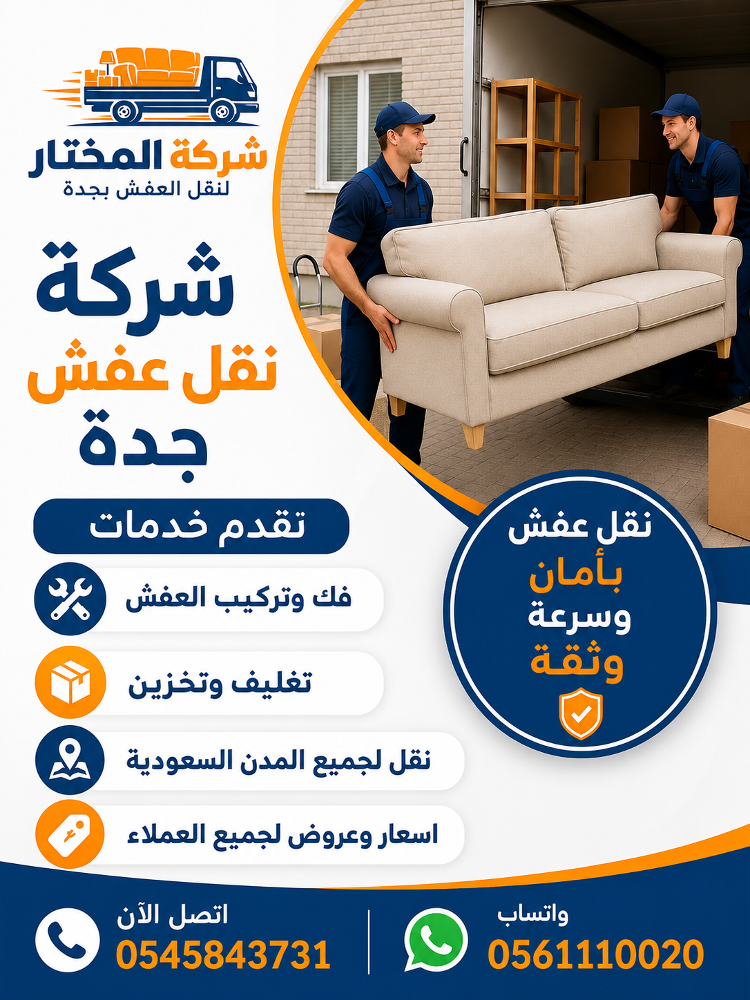

أفضل شركة نقل عفش جدة بأسعار مناسبة وخدمات متميزة 2026
تعتبر أفضل شركة نقل عفش جدة هي التي تجمع بين الجودة العالية والخدمة الممتازة والأسعار المناسبة، وهذا بالضبط ما تقدمه شركة المختار لنقل العفش. نحن ندرك أن الكثير من العملاء يبحثون عن أرخص شركة نقل عفش جدة دون التضحية بجودة الخدمة، ولذلك قمنا بتصميم باقات أسعار مرنة تناسب جميع الميزانيات. أسعار نقل العفش جدة لدينا تبدأ من 300 ريال فقط للشقة الصغيرة، وتشمل الفك والتغليف والنقل والتركيب في الموقع الجديد.
ما الذي يجعلنا أفضل شركة نقل عفش جدة؟ أولاً، خبرتنا الطويلة التي تتجاوز 15 عاماً في مجال نقل الأثاث بجدة. ثانياً، أسطولنا الحديث من سيارات نقل عفش جدة المجهزة بأحدث أنظمة التثبيت والتعليق التي تحمي الأثاث من الصدمات. ثالثاً، فريق العمل المدرب الذي يخضع لدورات تدريبية مستمرة في أحدث أساليب الفك والتركيب والتغليف. رابعاً، الضمان الكامل الذي نقدمه على جميع خدمات نقل العفش، حيث نتحمل مسؤولية أي ضرر قد يحدث للأثاث. خامساً، نقدم دينا نقل عفش جدة مناسبة للشوارع الضيقة والنقل السريع للكميات الصغيرة والمتوسطة.
عندما تبحث عن شركة نقل عفش جدة أو نقل عفش جدة أو شركة نقل أثاث جدة، فإنك تريد شركة تتعامل مع أثاثك وكأنه أثاثها. نحن في شركة المختار نقدم خدمة نقل العفش بجدة بأعلى معايير الأمان والجودة. أسعار نقل العفش جدة لدينا تنافسية جداً، حيث نقدم عروضاً خاصة وحسومات تصل إلى 20% للحجوزات المبكرة. سواء كنت بحاجة إلى نقل شقة صغيرة أو فيلا كبيرة أو مكتب تجاري، فإن فريقنا جاهز لخدمتك.

خدمات نقل الأثاث داخل جدة | تغطية شاملة لجميع الأحياء

نحن نقدم خدمات نقل أثاث جدة المتكاملة التي تشمل جميع أحياء جدة شمالاً وجنوباً وشرقاً وغرباً. سواء كنت تقيم في حي الصفا، أو النسيم، أو الحمدانية، أو النخيل، أو الشاطئ، فإن فريقنا جاهز للوصول إليك خلال 30 دقيقة من اتصالك بنا. نقل العفش بجدة يتم بواسطة فرق متخصصة تعرف طرق جدة جيداً وتتعامل مع الازدحامات المرورية بذكاء لضمان الوصول في الوقت المحدد. خدمتنا تشمل نقل المنازل سواء كانت شققاً صغيرة أو فللاً كبيرة، ونضمن لك الانتقال السلس بدون أي متاعب.
تتميز خدمة نقل أثاث جدة لدينا باستخدام سيارات نقل عفش جدة المجهزة بأحدث الوسائل التي تضمن عدم تعرض الأثاث لأي ضرر أثناء النقل. سياراتنا مغلقة بالكامل لحماية الأثاث من الغبار والأتربة والعوامل الجوية، ومجهزة بأحزمة تثبيت واحتياطات داخلية تمنع تحرك الأثاث. كما نوفر خدمة دينا نقل عفش جدة مناسبة للشوارع الضيقة والانتقالات السريعة. فريق العمل لدينا يتكون من فنيين متخصصين في فك وتركيب العفش، بالإضافة إلى عمال تغليف محترفين.
خدماتنا تشمل أيضاً نقل فلل جدة ونقل شقق جدة ونقل مكاتب جدة بنفس المستوى من الجودة والاحترافية. نحن نقدم خدمة نقل على مدار الساعة، مما يعني أننا متاحون للعمل في أي وقت، حتى في أيام العطلات الرسمية. نقل عفش داخل جدة مع شركة المختار يعني راحة البال التامة.
خدمات نقل العفش المتكاملة في جدة | حلول شاملة لجميع احتياجاتك
نقدم في شركة المختار خدمات نقل العفش المتكاملة في جدة التي تشمل جميع مراحل عملية الانتقال من البداية حتى النهاية. خدمات نقل العفش لدينا تبدأ من المعاينة المجانية وتقييم حجم العفش، ثم تقديم عرض سعر شفاف، ثم عملية الفك والتغليف الاحترافية، ثم النقل باستخدام أحدث السيارات المجهزة، وأخيراً التركيب في المنزل الجديد وتنظيف الموقع. نحن نقدم نقل الأثاث ونقل المنازل بكل احترافية، مما يضمن لك تجربة انتقال سلسة وخالية من المتاعب.
ما يميز خدمات نقل العفش لدينا هو التخصيص حسب احتياجات كل عميل. سواء كنت بحاجة إلى نقل أثاث شقة صغيرة أو فيلا كبيرة أو مكتب تجاري، فإن لدينا الخبرة والموارد اللازمة. نستخدم أحدث تقنيات التغليف والحماية، وأفضل مواد التغليف المتوفرة في السوق، وأحدث سيارات النقل المجهزة بأنظمة تثبيت متطورة. فريقنا مدرب على التعامل مع جميع أنواع الأثاث، بما في ذلك الأثاث الفاخر والتحف الثمينة والأجهزة الإلكترونية الحساسة.
نحن نضمن لك وصول أثاثك إلى وجهته الجديدة بحالة ممتازة، مع تقديم ضمان كامل على سلامة الأثاث. نقل المنازل مع شركة المختار يعني أنك لن تضطر إلى رفع إصبع واحد، فقط اتصل بنا وسنقوم بكل شيء نيابة عنك. من الفك والتغليف إلى النقل والتركيب، نحن نحرص على كل التفاصيل الصغيرة لضمان رضاك التام.
فك وتركيب الأثاث بواسطة نجارين محترفين في جدة
نقدم في شركة المختار خدمة فك وتركيب العفش على أعلى مستوى من الاحترافية بواسطة فريق من نجار فك وتركيب أثاث مدربين ولديهم خبرة تزيد عن 10 سنوات في التعامل مع جميع أنواع الأثاث. نحن نقوم بفك وتركيب غرف النوم، والمطابخ، والمجالس، والمكاتب، والمطابخ، وأثاث الأطفال، والأنتيكات، وأي نوع آخر من الأثاث. تستخدم شركتنا أحدث الأدوات والمعدات لضمان فك الأثاث بدون أي تلف. خدمة فك وتركيب العفش بجدة لدينا تضمن إعادة التركيب بدقة كما كان في المنزل القديم.
عند التعاقد معنا لخدمة فك وتركيب العفش، نقوم بترقيم جميع القطع ووضع ملصقات تعريفية عليها لتسهيل عملية إعادة التركيب في المنزل الجديد. فريقنا يحرص على فك الأثاث بعناية فائقة، مع الحفاظ على البراغي والمسامير والقطع الصغيرة في أكياس مخصصة مكتوب عليها نوع القطعة لتجنب فقدان أي جزء. كما نقوم بتغليف الأجزاء الزجاجية والمرايا بشكل خاص باستخدام مواد فقاعية وأشرطة لاصقة عالية الجودة. بعد الوصول إلى الوجهة الجديدة، يقوم الفريق بتركيب الأثاث في الأماكن التي تحددها، مع التأكد من ثباته وصلاحيته للاستخدام.
نجار فك وتركيب أثاث لدينا يستخدم أحدث المعدات والتقنيات لضمان فك وتركيب سريع وآمن. ننهي فك شقة كاملة في غضون ساعتين، وننهي تركيبها في نفس المدة تقريباً. نستخدم تقنيات حديثة في التركيب، مثل موازين الليزر للتأكد من استواء الأثاث على الجدران. كما نقدم ضماناً على أعمال الفك والتركيب لمدة شهر كامل. تركيب غرف النوم يتم بدقة متناهية لضمان راحتك.
خدمات فك وتركيب الأثاث | حلول احترافية لجميع أنواع الأثاث
نقدم في شركة المختار مجموعة شاملة من خدمات فك وتركيب الأثاث التي تشمل جميع أنواع الأثاث المنزلي والمكتبي. فك الأثاث يتم بعناية فائقة باستخدام الأدوات المناسبة لكل نوع من الأثاث، مع الحرص على عدم إتلاف أي قطعة. تركيب الأثاث يتم بنفس الدقة، مع التأكد من ثبات جميع القطع وتركيبها بشكل صحيح. فريق نجار أثاث لدينا مدرب على التعامل مع جميع أنواع الأخشاب والمواد، ويعرف كيفية فك وتركيب الأثاث بسرعة وكفاءة.
تشمل خدمات فك وتركيب الأثاث لدينا: فك وتركيب غرف النوم بجميع أنواعها (سراير، خزائن، تسريحات)، فك وتركيب المجالس العربية والأوروبية، فك وتركيب المطابخ الجاهزة، فك وتركيب المكاتب وطاولات الاجتماعات، فك وتركيب الأجهزة الكهربائية المثبتة، فك وتركيب الستائر والنجف. كل فريق متخصص في نوع معين من الأثاث لضمان أعلى مستوى من الجودة.
نحن نستخدم أحدث أدوات فك الأثاث وتركيب الأثاث، بما في ذلك المفكات الكهربائية، والموازين الليزرية، وأجهزة الكشف عن الأسلاك في الجدران. هذا يضمن لنا تركيب الأثاث بشكل آمن ومستوٍ تماماً. كما نقدم خدمة الترقيم والتوثيق لجميع القطع المفككة، مع إعداد تقرير مفصل عن حالة الأثاث قبل وبعد الفك والتركيب. خدمات فك وتركيب الأثاث لدينا هي الأكثر طلباً في جدة.

فك وتركيب غرف النوم | خدمة متخصصة لتركيب غرف النوم بكل دقة
تعتبر غرف النوم من أكثر قطع الأثاث حساسية والتي تحتاج إلى خبرة خاصة عند تركيب غرف النوم أو فكها. نحن في شركة المختار نقدم خدمة متخصصة لـ فك غرف النوم وتركيب غرف النوم بواسطة نجار غرف نوم محترف. غرف النوم تحتوي على العديد من القطع الكبيرة والثقيلة مثل السرائر والدواليب والتسريحات، والتي تحتاج إلى فك وتركيب دقيق لتجنب أي تلف أو خدش.
عند فك غرف النوم، نقوم بتفكيك السرير إلى أجزائه الأساسية (الإطار، القاعدة، اللوح الأمامي)، وتفكيك الدولاب إلى أجزائه مع ترقيم كل قطعة وكل باب، وتفكيك التسريحة مع الحفاظ على المرايا. كل البراغي والمسامير والقطع الصغيرة توضع في أكياس شفافة مكتوب عليها نوع القطعة التي تنتمي إليها. هذا يضمن لنا إعادة تركيب غرف النوم بنفس الشكل دون فقدان أي جزء.
نجار غرف نوم لدينا لديه خبرة في التعامل مع جميع أنواع غرف النوم، سواء كانت خشبية أو زجاجية أو حديثة أو كلاسيكية. نحن نستخدم أدوات خاصة لتفكيك وتركيب غرف النوم، مثل مفكات كهربائية بقوة تحكم في العزم، وموازين ليزر لضمان استواء الدواليب، ومواد حماية للزوايا. خدمة فك وتركيب غرف النوم لدينا تشمل أيضاً فك وتركيب الأسرة الطبية والكهربائية. نضمن لك إعادة تركيب غرفة نومك كما كانت تماماً أو حتى أفضل.
تغليف العفش وحماية الأثاث | نضمن وصول عفشك بحالة ممتازة
تعتبر عملية تغليف العفش من أهم مراحل النقل التي تحدد مدى سلامة الأثاث عند الوصول إلى الوجهة الجديدة. في شركة المختار، نقدم خدمة تغليف الأثاث وحماية الأثاث بأحدث المواد وأفضل التقنيات. خدمة تغليف العفش وحماية الأثاث لدينا تشمل استخدام البلاستيك الفقاعي المقوى، والكراتين المزدوجة الجدران، والأغطية القماشية السميكة، والصناديق الخشبية للتحف والأجهزة الإلكترونية الحساسة.
حماية الأثاث تبدأ باختيار مواد التغليف المناسبة لكل قطعة. الأرائك والكنب تُغلف بأغطية قماشية خاصة مقاومة للماء، والمرايا واللوحات الزجاجية تُغلف بطبقات متعددة من البلاستيك الفقاعي والكرتون، والأجهزة الإلكترونية مثل التلفزيونات والثلاجات تُغلف بمواد عازلة للصدمات، وغرف النوم يتم تغليف قطعها بشكل منفصل مع حماية الزوايا والأطراف. يستخدم فريقنا أيضاً أشرطة التغليف اللاصقة عالية الجودة والزوايا البلاستيكية الحامية للأثاث الخشبي.
تغليف العفش مع شركة المختار يعني راحة البال التامة. نحن نضمن أن جميع قطع الأثاث ستصل سليمة 100% بفضل جودة مواد التغليف واحترافية فريق العمل. كما نقدم خدمة التغليف بشكل منفصل للعملاء الذين يرغبون فقط في تغليف عفشهم دون نقله، أو لتخزينه في مستودعاتنا. أسعار التغليف لدينا تعتبر الأكثر تنافسية في جدة، ويمكنك الحصول على عرض سعر مجاني من خلال الاتصال بنا.
المواد المستخدمة في تغليف الأثاث | أفضل مواد التغليف لحماية قصوى
نستخدم في شركة المختار أفضل مواد تغليف العفش المتوفرة في السوق لضمان أقصى حماية لعفشك. كراتين نقل الأثاث التي نستخدمها هي من النوع المقوى بجدارين، وتتحمل أوزاناً كبيرة وتحمي المحتويات من الصدمات. مواد الحماية تشمل البلاستيك الفقاعي بثلاث طبقات، والزوايا البلاستيكية والكرتونية لحماية زوايا الأثاث، والأغطية القماشية المقاومة للماء والغبار، والرغوة العازلة للصدمات والاهتزازات.
مواد تغليف العفش لدينا يتم اختيارها بعناية حسب نوع كل قطعة من الأثاث. للقطع الزجاجية والمرايا، نستخدم طبقات متعددة من البلاستيك الفقاعي والكرتون السميك. للأجهزة الإلكترونية، نستخدم مواد مضادة للكهرباء الساكنة بالإضافة إلى الرغوة العازلة. للأثاث الخشبي الفاخر، نستخدم أغطية قماشية ناعمة من الداخل مع طبقة خارجية مقاومة للماء. جميع مواد التغليف التي نستخدمها صديقة للبيئة وقابلة لإعادة التدوير.
المواد المستخدمة في تغليف الأثاث لدينا يتم تجديدها باستمرار لتواكب أحدث التقنيات في عالم التغليف. نحن نؤمن بأن جودة كراتين نقل الأثاث ومواد الحماية هي العامل الأهم في ضمان وصول الأثاث بحالة ممتازة. لذلك، لا نتردد أبداً في استخدام أفضل المواد المتوفرة، حتى لو كان ذلك يعني تكلفة أعلى قليلاً بالنسبة لنا، لأن رضا العميل وسلامة أثاثه هما أولويتنا الأولى.
نقل الفلل والمنازل في جدة | خدمات متخصصة لنقل الفلل والمنازل
تتميز شركة المختار بتقديم خدمات متخصصة في نقل فلل جدة ونقل منازل جدة ونقل شقق جدة. نحن ندرك أن كل نوع من هذه المنشآت له متطلباته الخاصة وأساليبه المثلى للنقل. عند نقل فيلا سكنية، نخصص فريقاً كبيراً يتكون من 6-8 عمال للتعامل مع حجم الأثاث الكبير، ونستخدم أكثر من شاحنة إذا لزم الأمر. خدمة نقل الفلل والمنازل في جدة لدينا تشمل كل شيء بدءاً من أثاث الحدائق الخارجية وصولاً إلى الأجهزة الإلكترونية الداخلية.
أما بالنسبة لـ نقل شقق جدة، فنحن نقدم حلولاً مرنة تناسب المساحات المحدودة، مع استخدام سيارات بحجم مناسب للشوارع الضيقة في بعض الأحياء القديمة. نضمن لك فك وتغليف ونقل وتركيب أثاث شقتك خلال 4-6 ساعات فقط، مع الالتزام التام بعدم إزعاج الجيران. نقل منازل جدة يتم باحترافية عالية، حيث نتعامل مع كل منزل كحالة خاصة ندرس احتياجاتها بدقة.
سواء كنت بحاجة إلى نقل فيلا كاملة بحديقتها، أو شقة صغيرة، فإن شركة المختار لديها الخبرة والفريق والعتاد اللازم لإنجاز المهمة بكفاءة عالية. نستخدم تقنية التحميل الأمثل لاستغلال مساحة الشاحنات بشكل مثالي، مما يقلل عدد الرحلات وبالتالي التكلفة عليك. نحن نقدم عروضاً خاصة لنقل الفلل والمنازل الكبيرة، ويمكنك الحصول على خصم يصل إلى 25% عند حجز خدمة النقل الشامل.
نقل المكاتب والشركات في جدة | حلول احترافية لنقل الشركات والمكاتب
نقدم في شركة المختار خدمات متخصصة في نقل مكاتب جدة ونقل شركات جدة ونقل المؤسسات. نقل المكاتب والشركات يختلف عن نقل المنازل من حيث الحساسية والتنظيم المطلوب. نحن ندرك أن توقف العمل في الشركة لأيام بسبب عملية نقل غير منظمة يمكن أن يكلف الشركة الكثير. لذلك، صممنا خدماتنا لتكون سريعة ومنظمة وغير مؤثرة على سير العمل قدر الإمكان.
خدمة نقل مكاتب جدة لدينا تشمل: تفكيك المكاتب والكراسي وطاولات الاجتماعات، تغليف الأجهزة الإلكترونية (حواسيب، طابعات، سيرفرات) بمواد مضادة للصدمات والكهرباء الساكنة، تغليف ونقل المستندات والملفات في صناديق مخصصة، نقل الأثاث المكتبي باستخدام سيارات مجهزة، وإعادة التركيب والتنظيم في الموقع الجديد. نعمل غالباً خلال عطلة نهاية الأسبوع أو خارج ساعات الدوام الرسمي لتجنب تعطيل العمل.
خدمة نقل المكاتب والشركات لدينا تشمل أيضاً نقل المؤسسات الكبيرة التي تحتوي على معدات ثقيلة وأجهزة متطورة. فريقنا مدرب على التعامل مع هذه المعدات بحذر شديد، مع استخدام أدوات خاصة لنقلها بدون إتلاف. نقدم تأميناً شاملاً على جميع محتويات المكتب أثناء النقل، ونسلمك تقريراً مفصلاً عن حالة جميع الأجهزة والمعدات بعد الانتهاء من التركيب.
نقل الشركات والمكاتب إلى الرياض | خدمات نقل احترافية للرياض
نقدم في شركة المختار خدمة متخصصة لـ نقل شركات الرياض ونقل مكاتب الرياض ونقل مؤسسات من جدة إلى الرياض. الرياض هي العاصمة الإدارية للمملكة، وتستقطب العديد من الشركات والمؤسسات التي تحتاج إلى نقل مكاتبها إليها. خدمة نقل الشركات والمكاتب إلى الرياض لدينا مصممة خصيصاً لتلبية احتياجات الشركات التي تنتقل إلى الرياض.
عملية نقل شركات الرياض تبدأ بمعاينة شاملة لجميع محتويات المكتب في جدة، وتقديم خطة نقل مفصلة تشمل الجدول الزمني وعدد الشاحنات المطلوبة وعدد العمال. نستخدم شاحنات مخصصة للرحلات الطويلة مجهزة بأنظمة تعليق متطورة تمتص الصدمات، وسائقين مدربين على الطرق السريعة بين جدة والرياض. نضمن لك وصول جميع معداتك ومستنداتك وأثاثك إلى الرياض بحالة ممتازة.
نقل مكاتب الرياض لدينا يشمل أيضاً التفكيك والتغليف والنقل وإعادة التركيب في موقعك الجديد في الرياض. نعمل بتنسيق كامل مع إدارتك لضمان أقل وقت توقف ممكن. نقدم أيضاً خدمة التخزين المؤقت في الرياض إذا كان مكتبك الجديد غير جاهز بعد. اتصل بنا لتحصل على عرض سعر مخصص لنقل شركتك إلى الرياض مع خصم خاص للشركات الكبيرة.
خدمات نقل العفش بين المدن | شحن أثاث آمن لمسافات بعيدة
لا تقتصر خدماتنا على نقل العفش داخل جدة فقط، بل نمتد لتشمل نقل عفش بين المدن باحترافية وأمان عاليين. نحن نقدم خدمة نقل أثاث خارج جدة وشحن أثاث إلى جميع مدن المملكة العربية السعودية، باستخدام شاحنات مخصصة للرحلات الطويلة مجهزة بأنظمة تعليق متطورة تمتص الصدمات. خدمات نقل العفش بين المدن لدينا تضمن وصول أثاثك بحالة ممتازة حتى لو كانت المسافة كبيرة.
نحن نوفر خدمات شحن أثاث إلى الرياض، الدمام، مكة، المدينة المنورة، أبها، تبوك، وغيرها من المدن. لكل وجهة نستخدم الفريق المناسب والعتاد المناسب، مع مراعاة طبيعة الطريق والمسافة. في الرحلات الطويلة، نخصص سائقين اثنين للتناوب على القيادة لضمان الوصول في الوقت المحدد وبأمان تام. كما نوفر تأميناً شاملاً على الأثاث أثناء النقل بين المدن، يصل إلى 20,000 ريال سعودي كغطاء ضد أي حوادث نادرة.
نقل عفش بين المدن مع شركة المختار يعني أنك لست مضطراً للقلق بشأن أي شيء. فريقنا يتولى كل شيء بدءاً من الفك والتغليف في جدة، مروراً بالشحن والنقل، وصولاً إلى إعادة التركيب في منزلك الجديد في أي مدينة أخرى. نحن نقدم عروضاً خاصة للشحنات الكبيرة وللعملاء الدائمين. اتصل بنا لتحصل على عرض سعر دقيق لوجهتك المحددة.
مستودعات تخزين العفش بجدة | حفظ آمن لأثاثك لفترات طويلة
نقدم في شركة المختار خدمة تخزين عفش جدة في مستودعات الأثاث مجهزة بأعلى المعايير العالمية. هذه الخدمة مثالية للعملاء الذين يحتاجون إلى تخزين عفشهم لفترة مؤقتة أثناء الانتقال أو السفر، أو للذين يمرون بمرحلة تجديد المنزل. خدمة تخزين العفش في جدة لدينا تشمل استلام الأثاث من منزلك، وتغليفه، وتخزينه في مستودعاتنا المكيفة، وإعادته إليك في أي وقت تطلبه.
تخزين الأثاث في مستودعاتنا يعني أن أثاثك محمي من الرطوبة والحرارة والغبار والحشرات. مستودعاتنا مجهزة بأنظمة تحكم في درجة الحرارة والرطوبة، وكاميرات مراقبة على مدار الساعة، وأنظمة إنذار حديثة ضد الحريق والسرقة. كما نستخدم رفوف تخزين متينة لترتيب الصناديق والقطع بشكل يسمح بالتهوية المناسبة ويسهل عملية استرجاع أي قطعة عند الحاجة.
تخزين عفش جدة مع شركة المختار يتم بأسعار تنافسية تبدأ من 200 ريال شهرياً حسب حجم العفش، مع عروض خاصة للتخزين طويل المدى (أكثر من 6 أشهر). يمكنك أيضاً الاستفادة من خدمة التغليف قبل التخزين بخصم خاص. فريقنا جاهز لاستلام العفش من منزلك في أي وقت، وتغليفه، وتخزينه، وإعادته إليك عندما تحتاج إليه. اتصل بنا الآن لتحصل على استشارة مجانية حول أفضل خيارات التخزين المناسبة لك.
لماذا نحن أفضل شركة نقل عفش جدة؟ | مزايا لا حصر لها
عند مقارنة شركات نقل الأثاث في جدة، ستجد أن شركة المختار تتفوق في عدة جوانب. نحن نقدم نقل عفش احترافي بمعايير عالمية. أفضل شركة نقل عفش جدة لدينا تتميز بخبرة تزيد عن 15 عاماً، وفريق مدرب على أعلى مستوى، وأسطول حديث من السيارات المجهزة، ومواد تغليف عالية الجودة، وأسعار تنافسية، وضمان كامل على الخدمة.
كما يمكنك قراءة أفضل شركات نقل الأثاث في جدة والمقارنة بينها، وستجد أن شركة المختار تحظى بأعلى التقييمات من العملاء. مقارنة بين شركات نقل العفش تظهر بوضوح أننا نقدم أفضل قيمة مقابل المال.
جداول المقارنة | أسعار ومواد وخدمات نقل العفش في جدة
جدول 1: مقارنة أسعار نقل العفش حسب نوع العقار
| نوع العقار | شركة المختار | متوسط السوق | التوفير |
|---|---|---|---|
| شقة غرفة | 300-400 ريال | 450-600 ريال | توفير 30% |
| شقة غرفتين | 500-650 ريال | 700-900 ريال | توفير 28% |
| شقة 3 غرف | 750-950 ريال | 1000-1300 ريال | توفير 25% |
| فيلا صغيرة | 1,400-1,800 ريال | 1,800-2,500 ريال | توفير 22% |
| فيلا كبيرة | 2,200-3,000 ريال | 2,800-4,000 ريال | توفير 25% |
جدول 2: مقارنة مواد تغليف العفش المستخدمة
| المادة | شركة المختار | الشركات الأخرى | الميزة |
|---|---|---|---|
| البلاستيك الفقاعي | 3 طبقات - سمك 10 مم | طبقة واحدة - سمك 3 مم | حماية فائقة |
| كرتون التغليف | مقوى بجدارين | جدار واحد عادي | يتحمل أوزان أكبر |
| أغطية الأرائك | قماش مقاوم للماء | بلاستيك رقيق فقط | حماية من الرطوبة |
| صناديق التحف | خشب + فوم مخصص | كرتون عادي | حماية قصوى |
جدول 3: مقارنة خدمات ما بعد النقل
| الخدمة | شركة المختار | الشركات الأخرى |
|---|---|---|
| ضمان سلامة الأثاث | 3 أشهر | أسبوع أو لا يوجد |
| تنظيف الموقع بعد النقل | نعم شامل | نادراً |
| تركيب الأثاث في المنزل الجديد | نعم مع إعادة التنظيم | تركيب أساسي فقط |
| تأمين ضد التلف | تصل إلى 10,000 ريال | غير متوفر |
مناطق وأحياء جدة والمدن التي نخدمها
نخدم جميع أحياء جدة وجميع مدن المملكة. إليك قائمة بأهم الأحياء والمدن التي نقدم فيها خدمات نقل العفش:
الأسئلة الشائعة عن شركة نقل عفش جدة
تبدأ أسعار نقل العفش في جدة من 300 ريال للشقة الصغيرة وتختلف حسب حجم العفش والمسافة. اتصل بنا للحصول على عرض سعر مجاني.
شركة المختار هي أفضل شركة نقل عفش جدة بفضل خبرتها الطويلة وفريقها المدرب وأسعارها المناسبة وخدماتها المتكاملة.
نعم، نوفر خدمة فك وتركيب الأثاث بواسطة نجارين محترفين مع ضمان إعادة التركيب بدقة.
نعم، نوفر تغليفاً كاملاً للعفش باستخدام أفضل مواد التغليف لحماية الأثاث من الخدوش والكسور.
نعم، نقوم بنقل الفلل والشقق بجميع أحجامها مع تخصيص فريق مناسب لكل حجم.
نعم، لدينا خدمة متخصصة لنقل المكاتب والشركات مع الحد الأدنى من تعطيل العمل.
نعم، لدينا مستودعات تخزين عفش مكيفة وآمنة بأسعار تبدأ من 200 ريال شهرياً.
نعم، نوفر نقل عفش بين المدن إلى جميع مدن المملكة بشاحنات مجهزة للرحلات الطويلة.
تستغرق عملية نقل الأثاث من 2 إلى 6 ساعات حسب حجم العفش، والفيلا الكبيرة قد تستغرق يوماً كاملاً.
نعم، نمتلك سيارات نقل عفش مجهزة بأحدث أنظمة التثبيت والحماية.
نعم، نقدم ضماناً كاملاً على سلامة الأثاث لمدة 3 أشهر وتأميناً يصل إلى 10,000 ريال.
يمكنك الاتصال بنا على 0561110020 أو عبر واتساب 0545843731 للحصول على معاينة مجانية وعرض سعر.
نعم، لدينا فريق متخصص في التعامل مع الأثاث الفاخر والتحف باستخدام تقنيات خاصة.
نعم، نوفر تغليفاً خاصاً للأجهزة الإلكترونية بمواد مضادة للصدمات والكهرباء الساكنة.
نعم، نقدم خصماً 15% على أول تجربة وعروضاً خاصة للطلبات الكبيرة والعملاء الدائمين.
شركة نقل عفش جدة - اتصل بنا الآن
احصل على أفضل خدمة نقل عفش في جدة مع شركة المختار - فك وتركيب وتغليف ونقل بأعلى معايير الجودة